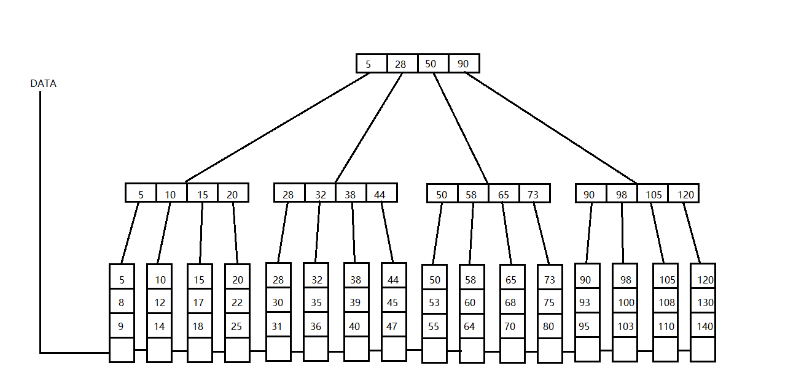

浅谈数据库的索引
我们知道，数据库的分类有关系型数据库和非关系型数据库。关系型数据库的代表是MySQL。这里我们不谈关系型和非关系型的区别于联系，只侧重于讲讲关系型数据库的索引实现原理。 之所以称为关系型数据库，是因为它记录了各种数据之间的“关系”，我们可以形象地将若干个属性它看做一张表，一个数据库有若干个这样的表，这些表之间靠某些共有…
浅谈数据库的索引
我们知道，数据库的分类有关系型数据库和非关系型数据库。关系型数据库的代表是MySQL。这里我们不谈关系型和非关系型的区别于联系，只侧重于讲讲关系型数据库的索引实现原理。
之所以称为关系型数据库，是因为它记录了各种数据之间的“关系”，我们可以形象地将若干个属性它看做一张表，一个数据库有若干个这样的表，这些表之间靠某些共有的字段连接起来，就构成了他们之间的关系。
试想，我们在进行表查询的时候，一般都需要扫描整张表，即全表扫描。而这些数据都是存储在磁盘上的，不用我说，磁盘I/O都是很慢的，大概是内存I/O的10000倍左右。这就导致数据库的查询操作效率很低，而究其原因，就是因为我们查询了很多不必要的数据属性。而改进办法很简单，就是尽力减少磁盘I/O。
此时就出现了索引的概念。索引就是对表中某个(些)字段进行排序的数据结构，一般采用B+树实现，每次查询操作最快只需要O(lgN)的时间复杂度。具体原因请看：
所谓B+树，是专为减少磁盘I/O而生的。一棵4阶的B+树示意图如下：

可以看出，在B+树中，所有数据均保存在叶子节点上，并且叶子节点是排序的，并且各叶子节点之间用指针连接起来。这样在B+树中查找数据时，只需要根据路径上的索引找到对应的叶子节点，然后利用二分查找再找到对应的值即可。
B+树实现索引的好处是，每次查找时不必执行全表扫描，也就是不必将磁盘上的所有数据都加载进内存，只需要加载对应的叶子节点到内存即可。所以对任何单个数据的查询，都只需要进行一次磁盘I/O即可。
使用B+树的另一个好处是，B+树的所有叶子节点都用指针连接起来了。所以要查找某一区间内所有的数据时，可以先从根节点找到区间的下界节点，此操作的时间复杂度为O(lgN)，然后再利用叶节点的指针遍历，直到找到区间上界节点为止，设区间的长度为M，此操作的时间复杂度为O(M)，所以总共的时间复杂度为O(M+lgN)。这是非常高效的。
综上，使用B+树可以极大提高磁盘查找的效率。当然，索引不只可以使用B+树，B树，位图都可以作为索引使用的数据结构，这里不再赘述。
【完】